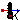
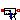

| Name | Description |
|---|---|
|  TemperatureSensor | Absolute temperature sensor in Kelvin |
|  RelTemperatureSensor | Relative Temperature sensor |
| HeatFlowSensor | Heat flow rate sensor |
| ConditionalFixedHeatFlowSensor | HeatFlowSensor, conditional fixed Temperature |
This is an ideal absolute temperature sensor which returns the temperature of the connected port in Kelvin as an output signal. The sensor itself has no thermal interaction with whatever it is connected to. Furthermore, no thermocouple-like lags are associated with this sensor model.
| Name | Description |
|---|---|
| T | Absolute temperature as output signal [K] |
| port |
The relative temperature "port_a.T - port_b.T" is determined between the two ports of this component and is provided as output signal in Kelvin.
Extends from Modelica.Icons.TranslationalSensor (Icon representing a linear measurement device).
| Name | Description |
|---|---|
| port_a | |
| port_b | |
| T_rel | Relative temperature as output signal [K] |
This model is capable of monitoring the heat flow rate flowing through this component. The sensed value of heat flow rate is the amount that passes through this sensor while keeping the temperature drop across the sensor zero. This is an ideal model so it does not absorb any energy and it has no direct effect on the thermal response of a system it is included in. The output signal is positive, if the heat flows from port_a to port_b.
Extends from Modelica.Icons.RotationalSensor (Icon representing a round measurement device).
| Name | Description |
|---|---|
| Q_flow | Heat flow from port_a to port_b as output signal [W] |
| port_a | |
| port_b |
If useFixedTemperature = false, this sensor acts just as a normal HeatFlowSensor.
If useFixedTemperature = true, it is assumed that the connections to both heatPorts of this sensor are conditionally removed; in this case, the measured Q_flow is reported = 0 automatically. To avoid a singular equation system, the temperature of the sensor is set to 293.15 K.
Extends from Modelica.Icons.RotationalSensor (Icon representing a round measurement device).
| Name | Description |
|---|---|
| useFixedTemperature | Fixed Temperature if true |
| Name | Description |
|---|---|
| port_a | |
| port_b | |
| Q_flow | Heat flow from port_a to port_b as output signal [W] |